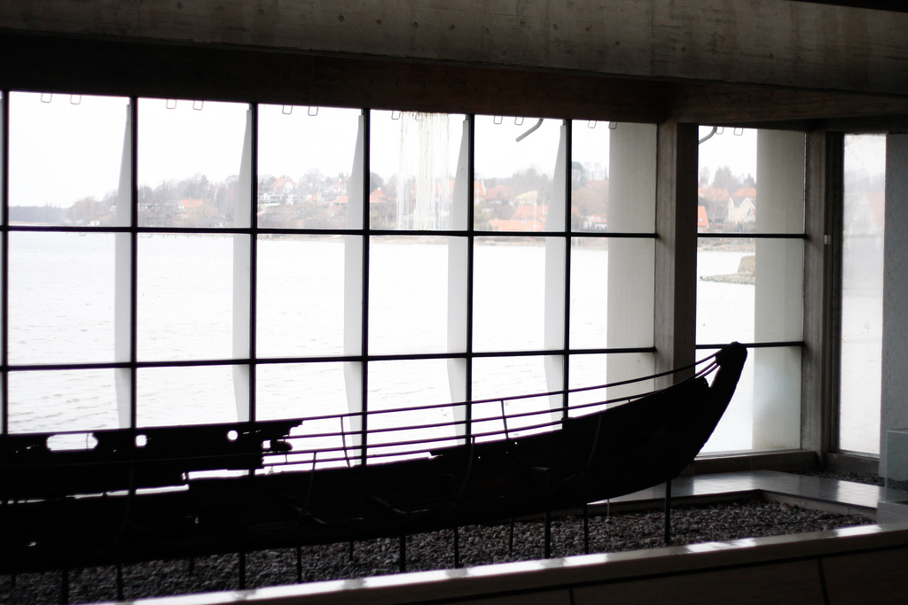

Computer Science 290 Fall 2013
Gregory M. Kapfhammer
Software Engineering
Creative
Algorithmic
Software development lifecycle
Software development lifecycle↵
Constraints
Outputs
Resources
 Waterfall
Waterfall1970
Real world?
Practice
Validation
Verification
Waterfall with Prototyping
Feedback
Partially iterative
V Model
Backtracking
Mistake during testing?
Go back to design!
Prototype Model
Revisions
Cycles
Cycle time
Incremental development
Iterative development
Spiral Model
1998
Repeat
Risk
Agile methods
12 principles
Which principles require tools?
Where are the documents?
Why focus on the tests?
Tests are executable documents
Best model?